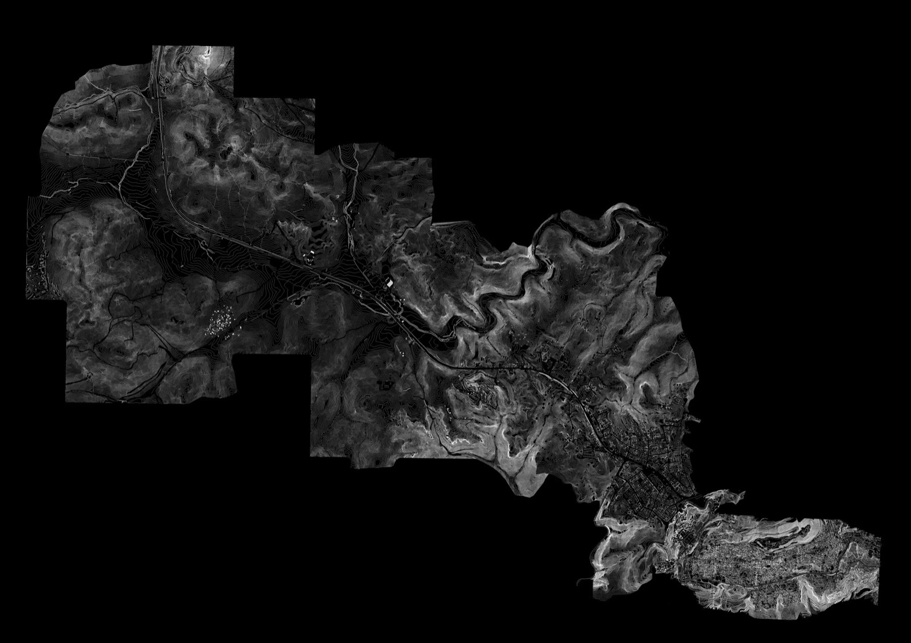
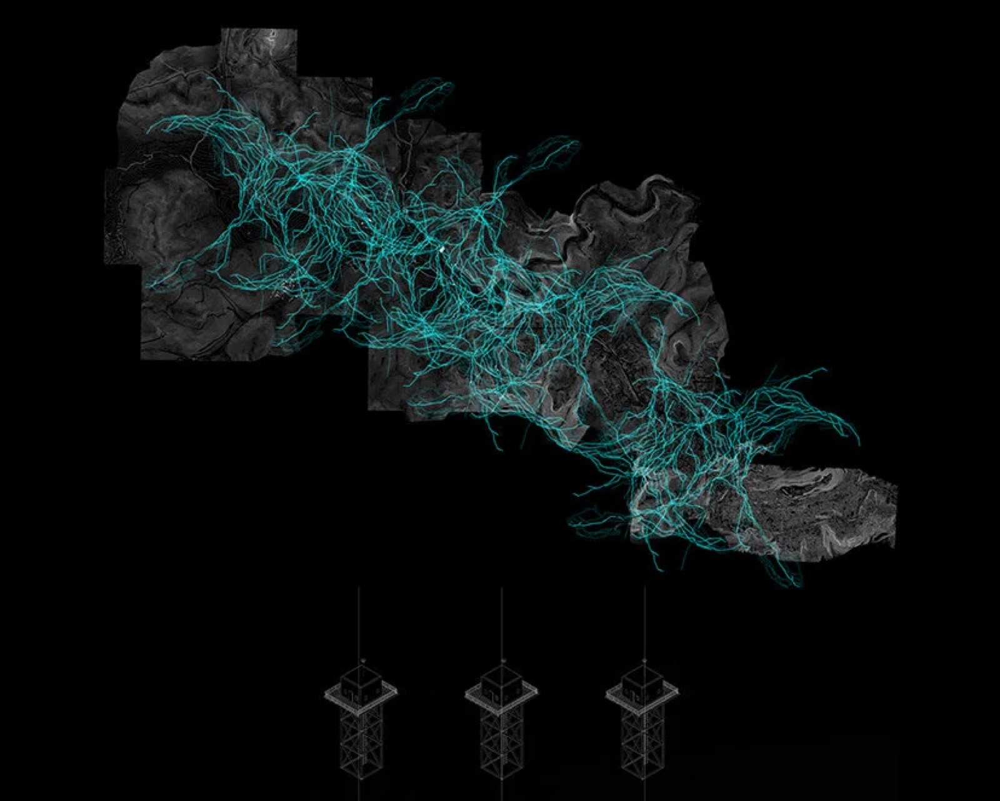
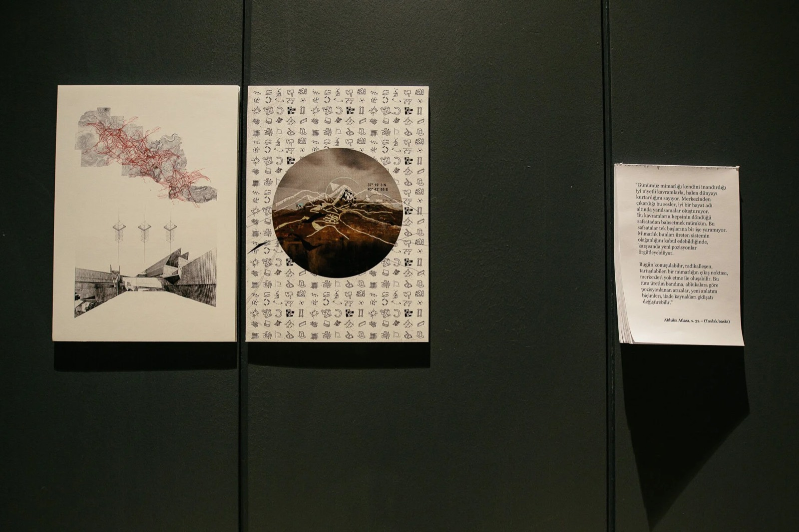
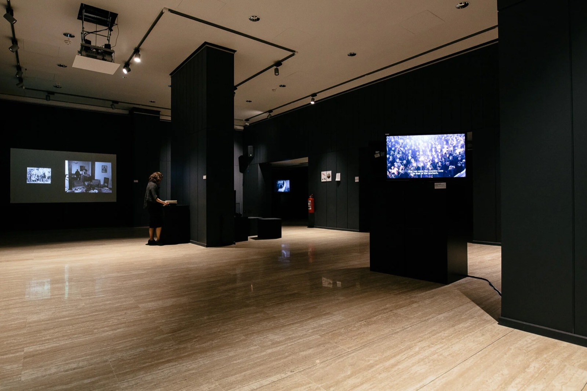

2016— · Counter-mapping, Research
Urban Blockade Atlas
Ongoing atlas of architecture as a site of resistance, started within the exhibition We Won't Leave.
- No.
- 1604
- Date/s
- 2016—
- Type/s
- Counter-mapping, Research
- With
- Pelin Tan
- Status
- ongoing
- Shown
- We Won't Leave (Terk Etmeyeceğiz), Goethe-Institut Ankara, Ankara, 2016
- Links
- original ↗



